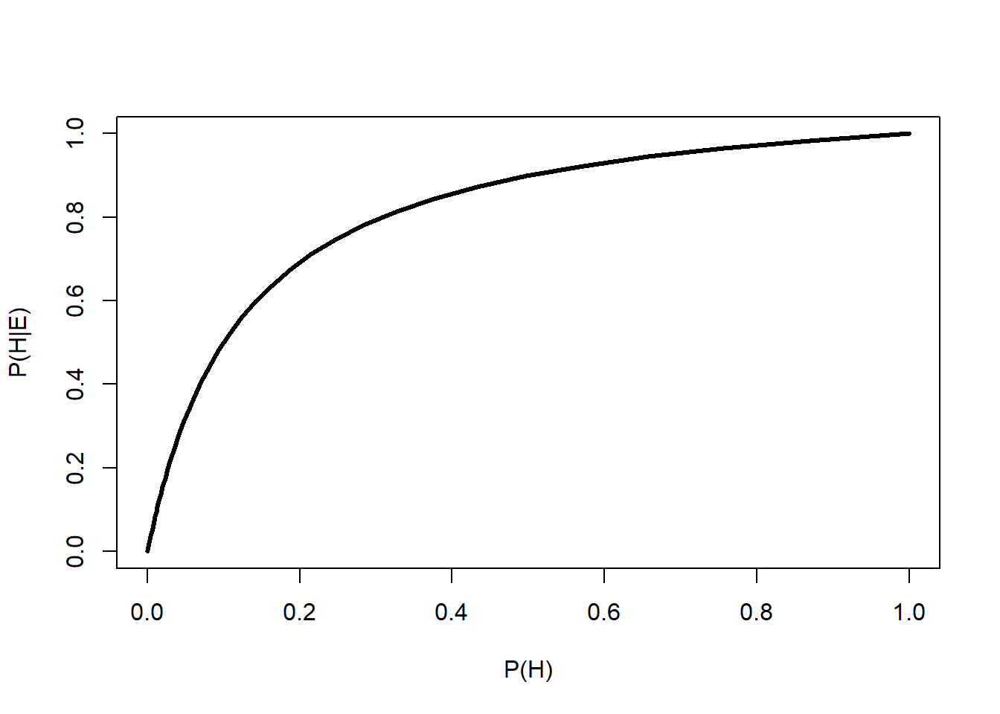
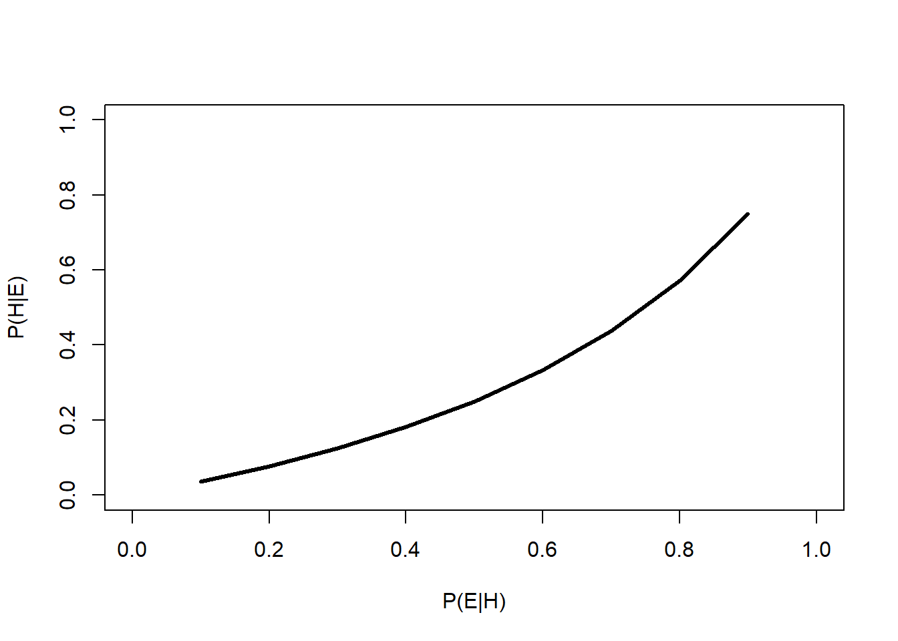

1.5 Alternatives to NHST
1.5.1 Bayesian inference
Bayesian inference is a framework for evaluating evidence and updating beliefs about hypotheses based on evidence. When conducting Bayesian inference, researchers start with some initial idea about their model system: a prior. They then collect evidence, and update their idea based on the evidence. The updated idea is called the posterior.
- When the prior is strong, or the evidence weak, their ideas will not be updated much and the posterior will be strongly influenced by the prior.
- When the evidence is strong, or the prior weak, the posterior will be updated more and thus less influenced by the prior.
Some researchers prefer to use naïve or uninformative priors, so that their conclusions are influenced mostly by the evidence. Bayesian statistical methods will return essentially the same parameter estimates (e.g., differences in means or slopes) as frequentist methods when uninformative priors are used. This means that almost any traditional statistical analysis can be replaced with an equivalent Bayesian one. The statistical models that are fit, such as linear regression or ANOVA, are the same. All that really changes is how the researcher interprets the relationship between the model and the data.
Bayesian inference depends on Bayes’ theorem:
\[p\left(H|E\right)=\frac{P\left(E|H\right)P\left(H\right)}{P\left(H\right)P\left(E|H\right)+P\left(\lnot H\right)P\left(E|\lnot H\right)}=\frac{P\left(E|H\right)P\left(H\right)}{P\left(E\right)}\]
where
- H is a hypothesis that can be true or false
- \(p\left(H\right)\) is the prior, an estimate of the probability of the hypothesis being true before any new data (E) are observed
- E is evidence, specifically new data used to update the prior
- \(p\left(H|E\right)\) is the probability of H given E. I.e., the probability of the hypothesis being true after new evidence is observed. This is also called the posterior probability.
- \(p\left(E\right)\) is the probability of E regardless of H. I.e., the probability of observing the evidence whether or not the hypothesis is true. \(p\left(E\right)\) is called the marginal likelihood.
- \(p\left(E|H\right)\) is the probability of observing the evidence E given H. I.e., the probability of observing the evidence if the hypothesis is true. \(p\left(E|H\right)\) is also called the likelihood.
Bayes’ theorem is powerful because it is very general. The precise nature of E and H do not matter. All that matters is that one could sensibly define an experiment or set of observations in which E might depend on H and vice versa.
1.5.1.1 Example Bayesian analysis–simple
Imagine you go to the doctor and get tested for a rare condition, Niemann-Pick disease. Your doctor tells you that this disease affects about 1 in 250000 people. Unfortunately, you test positive. But, the doctor tells you not to worry because the test only 99% reliable. Why is the doctor so sanguine, and what is the probability that you have Niemann-Pick disease8?

The probability of having this disease can be estimated using Bayes’ theorem. First, use what you know to assemble the terms:
- The overall incidence is 1 in 250000 people, or 0.0004%. So, the prior probability \(P\left(H\right)\) is 0.000004.
- The probability of a positive test given that you have the disease, \(P\left(E|H\right)\), is 0.99 because the test is 99% reliable.
- The denominator, \(P\left(E\right)\), is a little trickier to calculate. What we need is the unconditional probability of a positive test. This probability includes two situations: either a positive test when someone has the disease, or a positive test when someone doesn’t have the disease. Because of this, the denominator of Bayes rule is often rewritten as:
\[P\left(E\right)=P\left(H\right)P\left(E|H\right)+P\left(\lnot H\right)P\left(E|\lnot H\right)\]
Where \(P\left(\lnot H\right)\) is the probability of H being false (\(\lnot\) means “negate” or “not”). If you think about it, \(P\left(\lnot H\right)\) is just \(1 – P\left(H\right)\), and \(P\left(E|\lnot H\right)\) is just \(1 – P\left(E|H\right)\).
Next, plug the terms into Bayes’ rule:
\[p\left(H|E\right)=\frac{P\left(E|H\right)P\left(H\right)}{P\left(H\right)P\left(E|H\right)+P\left(\lnot H\right)P\left(E|\lnot H\right)}\]
\[p\left(H|E\right)=\frac{\left(0.99\right)\left(0.000004\right)}{\left(0.000004\right)\left(0.99\right)+\left(0.999996\right)\left(0.01\right)}\]
\[p\left(H|E\right)=\frac{0.00000396}{0.01000392}=0.000396\]
That’s not very worrying! In this example, the test evidence can’t overcome the fact that the disease is so rare. In other words, even among people who get a positive test, it’s far more likely that you don’t have the disease but got a false positive than that you have the disease and got a true positive. This is an example of a very strong prior being more influential than the evidence.
There’s an issue with this calculation, though. The prior probability of 0.000004 was based on the assumption that the test was conducted on a random person from the population. Do physicians conduct tests for vanishingly rare diseases on random people? Of course not. Maybe this physician only prescribes this test if they think that there is a 10% chance that you really have the disease. This might be because, in their experience, 10% of people with your symptoms turn out to have the disease. In that case, the calculation becomes:
\[\left(H|E\right)=\frac{\left(0.99\right)\left(0.1\right)}{\left(0.1\right)\left(0.99\right)+\left(0.9\right)\left(0.01\right)}\]
\[p\left(H|E\right)=\frac{0.099}{0.108}=0.916\]
91.6% is a lot more worrying than 0.0004%9. This example shows that the prior probability can have a huge effect on the posterior probability. Below is an R function that will calculate and print out posterior probabilities conditional on a fixed \(P\left(H\right)\) and varying \(P\left(E|H\right)\), or on a fixed \(P\left(E|H\right)\) and varying \(P\left(H\right)\). One and only one of the parameters must have more than 1 value.
test.bt <- function(peh, ph){
if(length(peh)==1){
xl <- "P(H)"
use.x <- ph
} else {
xl <- "P(E|H)"
use.x <- peh
}
y <- (peh*ph)/((peh*ph)+((1-ph)*(1-peh)))
plot(use.x, y, type="l", lwd=3, xlab=xl,
ylab="P(H|E)", xlim=c(0,1),ylim=c(0,1))
}
# example usage:
test.bt(peh=0.9, ph=10^seq(-6, -0.0001, length=100))
test.bt(peh=1:9/10, ph=0.25)
Let’s change the numbers a bit to get a more visual understanding of how this rule is working. Imagine another scenario:
About 24% of US adults are nearsighted10. As of 2019, about 6% of US adults worked in education11. If someone is nearsighted, what is the probability that they work in education?
First, assemble the terms:
- \(P\left(H\right)\), the prior unconditional probability that someone works in education, 6% or 0.06
- \(P\left(E\right)\), the unconditional probability of being nearsighted, or marginal likelihood, is 24% or 0.24.
- \(P\left(E|H\right)\), the probability of a nearsighted educational worker (assuming independence) is 0.24 \(\times\) 0.06 = 0.0144.
We can then calculate \(P\left(H|E\right)\) as:
\[P\left(educator|nearsighted\right)=\frac{P\left(H\right)P\left(E|H\right)}{P\left(H\right)P\left(E|H\right)+\left(1-P\left(H\right)\right)\left(P\left(E\right)\left(1-P\left(H\right)\right)\right)}=0.064\]
This might make sense if we draw the probabilities in rectangle with area = 1. The probability of the hypothesis being true given the evidence collected is the ratio of the probability that the evidence is observed and the hypothesis is true—\(P\left(E|H\right)\)—and the total probability that the evidence is observed at all12

And the critical calculation:

This example was kind of trivial, but what about if the probability of observing the evidence is not the same in each group? What if educators were 10\(\times\) as likely to be nearsighted as other workers? Then the rectangle and calculation would look like this:

In the second example, the probability that someone is an educational worker given that they are nearsighted is about 38.9%…quite a step up from the first number! This latter example shows the power of the evidence when the evidence is strong. Even though the probability of the posterior seems quite low relative to the space of all possibilities, a Bayesian would evaluate that probability in light of the evidence. The evidence restricts the range of possibilities to the cases where the evidence was actually observed (the darker sections of the rectangles). In the Bayesian framework, the probability associated with the lighter sectors, \(P\left(\lnot E|H\right)\) and \(P\left(\lnot E|\lnot H\right)\), don’t matter because they weren’t observed.
This latter point is one of the key points of difference between a traditional frequentist analysis (i.e., NHST) and a Bayesian analysis. In a frequentist analysis, the evidence is viewed as coming from a random distribution conditional on some true set of model parameters (i.e., on H). In Bayesian inference, the evidence is taken as given, and the model parameters conditional on the the data.
1.5.1.2 Example Bayesian analysis–not so simple
Let’s try another Bayesian analysis, this one not so simple. Usually, a biologist will use Bayesian inference to fit models to biological data, not make trivial calculations about the probability of observing near-sighted college professors (although you could). The example below illustrates how to fit a simple linear regression model using Bayesian inference. We will use the program JAGS, short for Just Another Gibbs Sampler (Plummer 2003), called from R using package rjags (Plummer 2021).
Let’s simulate a dataset for our example analysis:
set.seed(123)
x <- runif(100, 1, 16)
beta0 <- 40 # intercept
beta1 <- -1.5 # slope
sigma <- 5 # residual SD
y <- beta0 + beta1*x + rnorm(length(x), 0, sigma)Next, we need to write the model in the language used by JAGS. JAGS was designed to mostly work with a language developed for an older program for Bayesian modeling called BUGS (Bayesian inference Using Gibbs Sampling) (Lunn et al. 2009). BUGS itself has very similar syntax to R, and for that among other reasons is one of the most popular Bayesian statistics platforms. Both use a technique called Markov Chain Monte Carlo (MCMC) to fit models and sample from the posterior distributions of the parameters. In a nutshell, MCMC works by trying lots of random values in a sequence. At each step, the algorithm randomly changes each parameter. Parameters can change a lot when the model fit is poor, or a little bit when the model fit is good. Eventually the chain of values converges on a set of parameters with good model fit13.
JAGS is a separate program from R that must be installed on your machine. When called from R, JAGS will read a plain text file that contains a model. We will use the sink() command to make that file within R and save it to the home directory.
mod.name <- "mod01.txt"
sink(mod.name)
cat("
model{
# priors
beta0 ~ dnorm(0, 0.001)
beta1 ~ dnorm(0, 0.001)
sigma ~ dunif(0, 10)
tau.y <- 1 / (sigma * sigma)
# likelihood
for(i in 1:N){
y[i] ~ dnorm(y.hat[i], tau.y)
y.hat[i] <- beta0 + beta1 * x[i]
}# i for N
}#model
", fill=TRUE)
sink()This model defines the important parts of a Bayesian model: the priors \(P(H)\) and the likelihood \(P\left(E|H\right)\). JAGS will automatically calculate the other terms for you (it is also calculating the actual probabilities of the priors and likelihood). Notice that the priors are very uninformative, so that the posteriors are driven by the data. For example, for the intercept and slope we assume that they fall somewhere in a normal distribution with mean 0 and variance 1000. That’s a pretty big range. We could also specify something like a uniform distribution with limits ±1000, or ±10000, something even wider. The wider and thus less informative the priors, the more influence the data will have. However, that comes at the cost of longer model run times required to zero in on the right solution.
Next, we must define initial values for the model, package up the data for JAGS, and set the MCMC parameters.
# define initial values for MCMC chains
init.fun <- function(nc){
res <- vector("list", length=nc)
for(i in 1:nc){
res[[i]] <- list(beta0=rnorm(1, 0, 10),
beta1=rnorm(1, 0, 10),
sigma=runif(1, 0.1, 10))
}
return(res)
}
nchains <- 3
inits <- init.fun(nchains)
# parameters to monitor
params <- c("beta0", "beta1", "sigma")
# MCMC parameters
n.iter <- 5e4
n.burnin <- 1e4
n.thin <- 100
# package data for JAGS
in.data <- list(y=y, x=x, N=length(x))Finally we can run the model:
library(rjags)
library(R2jags)
model01 <- jags(data=in.data, inits=inits,
parameters.to.save=params,
model.file=mod.name,
n.chains=nchains, n.iter=n.iter,
n.burnin=n.burnin, n.thin=n.thin)#jags## Compiling model graph
## Resolving undeclared variables
## Allocating nodes
## Graph information:
## Observed stochastic nodes: 100
## Unobserved stochastic nodes: 3
## Total graph size: 414
##
## Initializing model
##
##
|
| | 0%
|
|+++++ | 10%
|
|++++++++++ | 20%
|
|+++++++++++++++ | 30%
|
|++++++++++++++++++++ | 40%
|
|+++++++++++++++++++++++++ | 50%
|
|++++++++++++++++++++++++++++++ | 60%
|
|+++++++++++++++++++++++++++++++++++ | 70%
|
|++++++++++++++++++++++++++++++++++++++++ | 80%
|
|+++++++++++++++++++++++++++++++++++++++++++++ | 90%
|
|++++++++++++++++++++++++++++++++++++++++++++++++++| 100%
##
|
| | 0%
|
|* | 2%
|
|** | 5%
|
|**** | 8%
|
|***** | 10%
|
|****** | 12%
|
|******** | 15%
|
|********* | 18%
|
|********** | 20%
|
|*********** | 22%
|
|************ | 25%
|
|************** | 28%
|
|*************** | 30%
|
|**************** | 32%
|
|****************** | 35%
|
|******************* | 38%
|
|******************** | 40%
|
|********************* | 42%
|
|********************** | 45%
|
|************************ | 48%
|
|************************* | 50%
|
|************************** | 52%
|
|**************************** | 55%
|
|***************************** | 58%
|
|****************************** | 60%
|
|******************************* | 62%
|
|******************************** | 65%
|
|********************************** | 68%
|
|*********************************** | 70%
|
|************************************ | 72%
|
|************************************** | 75%
|
|*************************************** | 78%
|
|**************************************** | 80%
|
|***************************************** | 82%
|
|****************************************** | 85%
|
|******************************************** | 88%
|
|********************************************* | 90%
|
|********************************************** | 92%
|
|************************************************ | 95%
|
|************************************************* | 98%
|
|**************************************************| 100%The most important part of the output is here:
model01## Inference for Bugs model at "mod01.txt", fit using jags,
## 3 chains, each with 50000 iterations (first 10000 discarded), n.thin = 100
## n.sims = 1200 iterations saved
## mu.vect sd.vect 2.5% 25% 50% 75% 97.5% Rhat n.eff
## beta0 39.937 1.084 37.698 39.247 39.941 40.650 41.920 1.001 1200
## beta1 -1.524 0.114 -1.742 -1.598 -1.525 -1.449 -1.293 1.001 1200
## sigma 4.908 0.366 4.236 4.642 4.876 5.140 5.684 1.000 1200
## deviance 600.500 2.511 597.596 598.648 599.891 601.643 606.925 1.001 1200
##
## For each parameter, n.eff is a crude measure of effective sample size,
## and Rhat is the potential scale reduction factor (at convergence, Rhat=1).
##
## DIC info (using the rule, pD = var(deviance)/2)
## pD = 3.2 and DIC = 603.7
## DIC is an estimate of expected predictive error (lower deviance is better).This table shows the posterior distribution of each model parameter: the intercept beta0, the slope beta1, and the residual SD sigma. There is also a measure of model predictive power called deviance. Better-fitting models have smaller deviance. The posterior distributions are given by their mean (mu), SD, and various quantiles. The Rhat statistic (\(\hat{R}\)) is also called the Gelman-Rubin statistic, and helps determine whether or not the model converged. Values of \(\hat{R}\) close to 1 are better (usually <1.001 or <1.01 are desirable, but there is no universally agreed-upon rule).
These parameter estimates are not far off from the true values of 40, -1.5, and 5. Notice that the means of the posterior distributions are close to the values estimated by ordinary linear regression:
summary(lm(y~x))##
## Call:
## lm(formula = y ~ x)
##
## Residuals:
## Min 1Q Median 3Q Max
## -11.1899 -3.0661 -0.0987 2.9817 11.0861
##
## Coefficients:
## Estimate Std. Error t value Pr(>|t|)
## (Intercept) 39.9851 1.0808 37.00 <2e-16 ***
## x -1.5299 0.1139 -13.43 <2e-16 ***
## ---
## Signif. codes: 0 '***' 0.001 '**' 0.01 '*' 0.05 '.' 0.1 ' ' 1
##
## Residual standard error: 4.846 on 98 degrees of freedom
## Multiple R-squared: 0.6479, Adjusted R-squared: 0.6443
## F-statistic: 180.3 on 1 and 98 DF, p-value: < 2.2e-16So why go through all of that Bayesian trouble? There are a few reasons where Bayesian inference might be preferable:
- The model to be fit is very complex. Because the user can specify any model they want, they can fit any model they want.
- Maximum-likelihood methods often require explicit derivations of model likelihoods, whereas an MCMC approach does not. This means that models whose likelihoods have no closed form solution, or computationally difficult solutions, can be estimated more easily with Bayesian methods than maximum likelihood (sometimes).
- The researcher has prior information that they would like to incorporate into the analysis. This can reduce the amount of data needed to reach certain conclusions (see below)14.
- Maximum likelihood methods are not effective in some situations.
- Error propagation is very easy under Bayesian inference (especially MCMC).
- The researcher prefers the philosophy of Bayesian inference.

Bayesian methods are largely beyond the scope of this course, but we will use MCMC in JAGS from time to time to fit complicated models where maximum likelihood doesn’t work so well.
1.5.2 Information-theoretic methods
Another alternative to NHST is information-theoretic (IT) modeling. IT methods borrow insights from information theory to draw conclusions about the extent to which statistical models describe data (Burnham and Anderson 2002). Rather than estimate parameters that minimize a loss function (e.g., residual sums of squared errors) and eliminate variables individually based on P-values, IT methods are used to compare different data models in terms of how much information is lost by using one of the models to represent the underlying process (Hobbs and Hilborn 2006). In other words, NHST arrives at a model by testing individual variables, while IT tests entire models.
There are several types of information criteria in use, but they all boil down to the sum of two terms: one that expresses the likelihood function of the data given the model, and another that penalizes the model for excess complexity (i.e., number of parameters). Information criteria such are used to compare models to each other, not to determine whether any particular model is “significant” or whether any of its terms are significant. For this reason, researchers using IT methods need to be very cautious to avoid overfitting.
The most common information criterion is Akaike’s Information Criterion (AIC) (Burnham and Anderson 2002):
\[AIC=-2L+2K=2K-2\log{\left(\hat{L}\right)}\]
where L is the natural logarithm of the likelihood function (\(\hat{L}\)) and K is the number of parameters in the model. The 2\(\times\) penalty on K makes it so that simpler models are preferred. Without this penalty, the likelihood could be increased simply by adding additional parameters (i.e., by overfitting). The likelihood function is expressed as -2 times its logarithm so that better fits (greater likelihoods) reduce AIC. The logarithm makes this effect nonlinear.
Other information criteria exist, such as the AIC corrected for small sample sizes (\({AIC}_C\)):
\[{AIC}_C=AIC+\frac{2K\left(K+1\right)}{n-K-1}\]
Where n is the number of observations used to fit the model. Exactly what constitutes a “small” sample size is subjective, but Burnham and Anderson (2002) suggest that \({AIC}_C\) should be used when n/K <40. Many other criteria exist, such as QAIC and \({QAIC}_C\) for use when overdispersion in suspected (Lebreton et al. 1992), Bayesian information criterion (BIC) for a more conservative alternative to AIC; and DIC (deviance information criterion) for use in Bayesian contexts.
1.5.2.1 Likelihood?
Before we jump into an example IT data analysis, we also need to understand what a “likelihood” function is. We’ve encountered the term several times in both Bayesian and non-Bayesian contexts. Formally, a likelihood is a function of the probability of observing the data under a particular data model. A data model is an expression of the mathematical relationships between variables; e.g., the linear regression model. When statisticians work with likelihoods, they are usually trying to find the model parameters that maximize the likelihood, or minimize the negative log-likelihood. Likelihoods are related to but not the same thing as probabilities.
1.5.2.2 Example IT analysis
As before, we will simulate a dataset so we know exactly what the results should be. Let’s create a dataset where some outcome y depends on 1 of 3 predictor variables: x1, x2, and x3. To illustrate how AIC can distinguish between models with better or worse predictive power, we’ll make the dependent variable dependent on only one predictor, x1.
set.seed(456)
# sample size
n <- 100
# draw potential predictor variables
x1 <- sample(20:100, n, replace=TRUE)
x2 <- rnorm(n, 45, 10)
x3 <- sample(41:42, n, replace=TRUE)
# model parameters
beta0 <- 3
beta1 <- 3.2
beta2 <- -8
beta3 <- 0.03
sigma <- 5
# "true" model
y <- beta0 + beta1*x1 + rnorm(n, 0, sigma)Next, fit linear regression models (“candidate models”) using different combinations of predictors. You can fit as many models as you like in this part, but should try to restrict the candidate set to those models you really think are viable, realistic hypotheses. Datasets with many predictors can easily generate hundreds or thousands of candidate models by assembling all of the combinations and permutations of different numbers of predictors. Don’t do that.
m00 <- lm(y~1)
m01 <- lm(y~x1)
m02 <- lm(y~x2)
m03 <- lm(y~x3)
m04 <- lm(y~x1+x2)
m05 <- lm(y~x1+x3)
m06 <- lm(y~x2+x3)
m07 <- lm(y~x1+x2+x3)You can inspect these models (e.g., summary(m01)) and see that x1 is always a significant predictor, while x2 and x3 are not. In frequentist terms, we would say that there was no significant effect of x2 or x3 on y because P \(\ge\) 0.05. In IT terms we would say that adding x2 or x3 to the model did not add explanatory power. Those statements are similar, but not quite the same because they use different criteria to infer how the variables are related.
We can compare the models using AIC. The command below will make a data frame holding the name of each model and its AIC.
aic.df <- AIC(m00, m01, m02, m03, m04, m05, m06, m07)
aic.df## df AIC
## m00 2 1145.3398
## m01 3 623.8889
## m02 3 1144.8685
## m03 3 1147.1488
## m04 4 625.6944
## m05 4 624.2252
## m06 4 1146.5993
## m07 5 626.0870What do we do with this? One common approach is to calculate what’s called an AIC weight. This quantity is an estimate of the probability that a model is the best model out of present candidates. This is NOT the same as the probability that a model is correct, or the best of all possible models—only the best out of the current set of candidates. We can calculate AIC weights in R with a few commands:
aic.df$delta <- aic.df$AIC - min(aic.df$AIC)
aic.df$wt <- exp(-0.5*aic.df$delta)
aic.df$wt <- aic.df$wt/sum(aic.df$wt)
aic.df <- aic.df[order(-aic.df$wt),]
aic.df## df AIC delta wt
## m01 3 623.8889 0.0000000 3.870182e-01
## m05 4 624.2252 0.3362974 3.271187e-01
## m04 4 625.6944 1.8055142 1.569166e-01
## m07 5 626.0870 2.1981493 1.289464e-01
## m02 3 1144.8685 520.9796540 2.873670e-114
## m00 2 1145.3398 521.4509418 2.270378e-114
## m06 4 1146.5993 522.7103962 1.209514e-114
## m03 3 1147.1488 523.2599265 9.189293e-115In this example, the model with the smallest AIC—and thus greatest AIC weight—was model 1 (the correct model). Interestingly, models 4 and 5 had \(\Delta\)AIC <2, which is usually interpreted as not being distinguishable from the best-supported model. This shouldn’t be surprising, because models 4 and 5 also included the true predictor x1. Model 7, which also included x3, was nearly as good but with a \(\Delta\)AIC \(\ge\) 2 we can exclude it. Notice that the worst-supported models (2, 0, 6, and 3) were the models that did not include the true predictor x1.
One key advantage of the IT framework is that it focuses less on P-values and permits the consideration of multiple hypotheses at once. If competing hypotheses can be expressed as a different statistical model (like in the example above), then an information criterion can be used to estimate which hypothesis is best supported by the data (although not necessarily whether any of them is correct). Another key advantage is that it allows averaging parameter estimates across multiple models. This allows researchers to say something about the effect of a factor without concluding exactly which statistical model is the correct one. Essentially, the weighted mean of parameter estimates across the models is calculated. The AIC weights are used to weight the mean:
res.list <- list(m01, m05, m04, m07)
x1.ests <- sapply(res.list, function(x){x$coefficients["x1"]})
x1.ests## x1 x1 x1 x1
## 3.232883 3.234502 3.231263 3.233119weighted.mean(x1.ests, aic.df$wt[1:4])## [1] 3.233189Not too far off from the true value of 3.2!
We’ll use an IT model selection approach occasionally in this class. While the example above was easy and relatively straightforward, there are some important caveats to using AIC and similar methods:
- Information criteria are only a measure of relative model performance, not model correctness or overall goodness of fit.
- Information criteria are only interpretable for sets of nested models: models that can be transformed to each other by setting one or more coefficients to 0.
- Rules-of-thumb about information criteria are just as arbitrary as the P < 0.05 criterion.
- Not every information criterion can be used in every situation. Read the friendly manual.
- IT methods are vulnerable to overfitting because they evaluate entire models, not individual variables. Researchers must think carefully about what variables to include.
1.5.3 Machine learning
The last alternative to NHST that we’ll explore in this class is machine learning (ML). ML is a huge and rapidly growing field of methods for extracting patterns from complex datasets. Many of these methods bear little resemblance to traditional statistics15.

There are too many ML algorithms out there to even begin to cover here, but they all have the same underlying philosophy: ML builds a model on a sample of the data, called the “training data”, and refines or improves the model based on its ability to predict additional “test data” that were not used in the model building process.
This strategy has some considerable advantages over traditional frequentist and Bayesian statistics. In those paradigms, researchers must specify a data model ahead of time and then test how well the data support that model. Specifying a data model makes many assumptions about the distribution of the response variable, the shape of the relationship between the variables (e.g., linear vs. curved vs. stepped), the relationships between predictors, and so on. ML usually makes no such assumptions. Instead, the model is treated as a “black box” that takes in input and spits out predictions. Researchers using ML methods typically don’t worry about or even try to interpret the inner workings of the black box. Those inner workings are often nonsensical to humans anyway. Instead, users of ML report and interpret the predictions of their models and different measures of predictive accuracy.
The disadvantages of ML compared to traditional statistics are also considerable. By not specifying a data model, researchers must assume that their training data are representative of the process they are trying to model. There’s an old saying in statistics and modeling: “Garbage in, garbage out.” If training data are not appropriate, or if there really is no relationship between the predictor variables and the response variable, there is no guarantee that a ML algorithm won’t find one anyway (this is similar to how traditional statistics sometimes get false positives). It’s still up to the researcher to interpret the patterns that the ML method detects and think long and hard about whether those patterns are reasonable.
Other disadvantages of ML are more practical. Most ML techniques require a lot of computing power, that may not be feasible for very large datasets for some researchers. ML techniques are also not standard practice in most fields of science, so researchers wanting to use ML will need to do extra work to show to editors and reviewers that their methods are legitimate and appropriate to their question. ML techniques are not as widely implemented in software packages as traditional statistical methods, and are not as well documented. This means that you will have fewer choices for what software to use and fewer places to get help. Finally, ML techniques can be easy to use but the details can be very hard to understand. As with any data analysis method, it is very easy to get yourself stuck or get into trouble using a technique you only partially understand.
I won’t include an example ML analysis here but can point you to some resources. For ecologists, De’ath (2007) and Elith et al. (2008) are the standard references. Elith et al. (2008) also points to an online source for some R functions that simplify the process (Elith and Leathwick 2017). Tarca et al. (2007) provided an early review for biology in general. Jones (2019) reviewed some applications of ML in cell biology. ML methods are being applied to problems that are not amenable to traditional statistics, particularly image analysis (Kan 2017, Whytock et al. 2021).